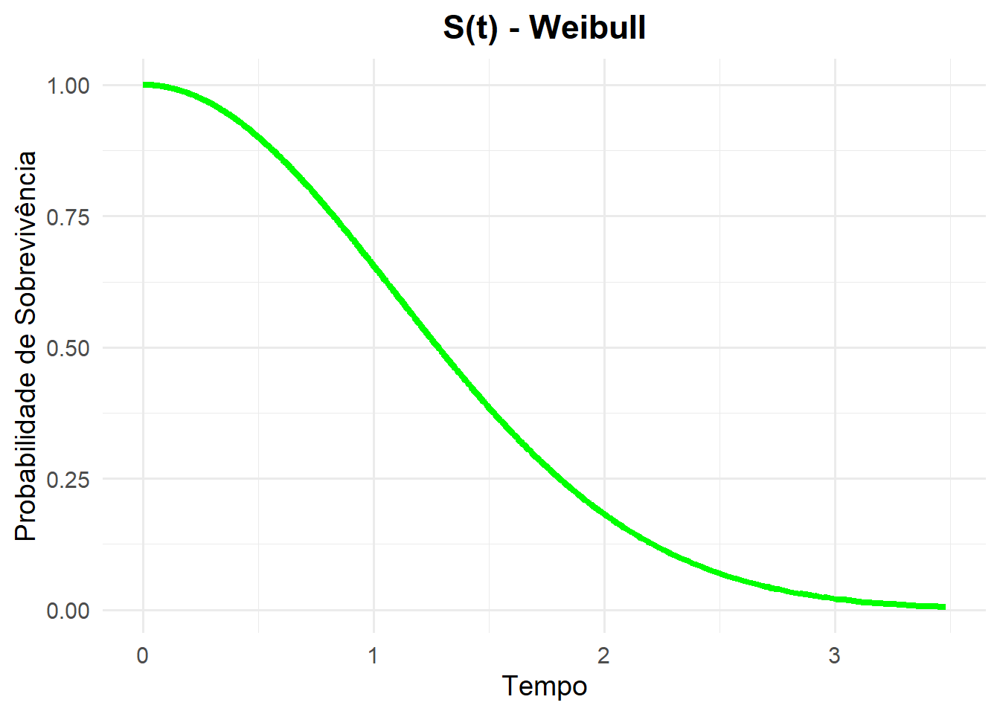
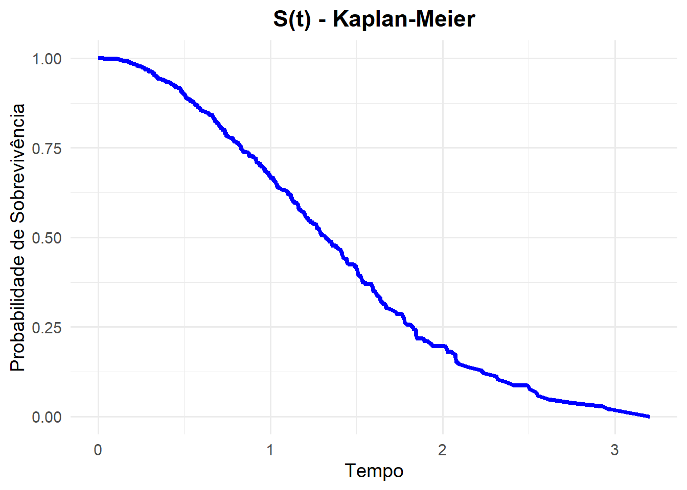
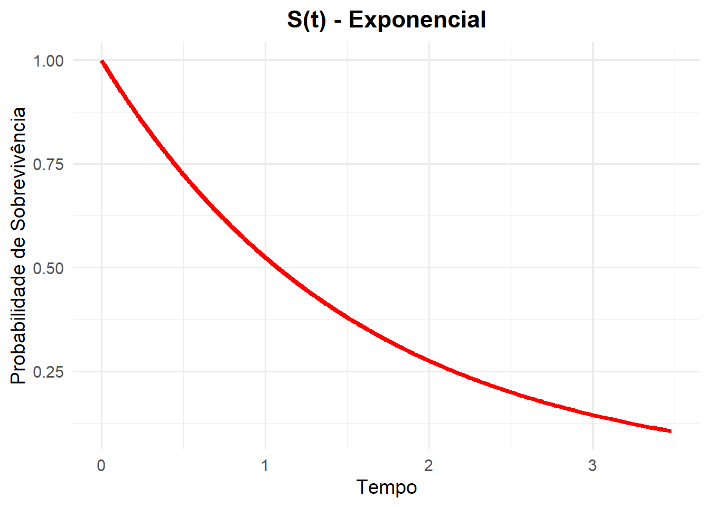
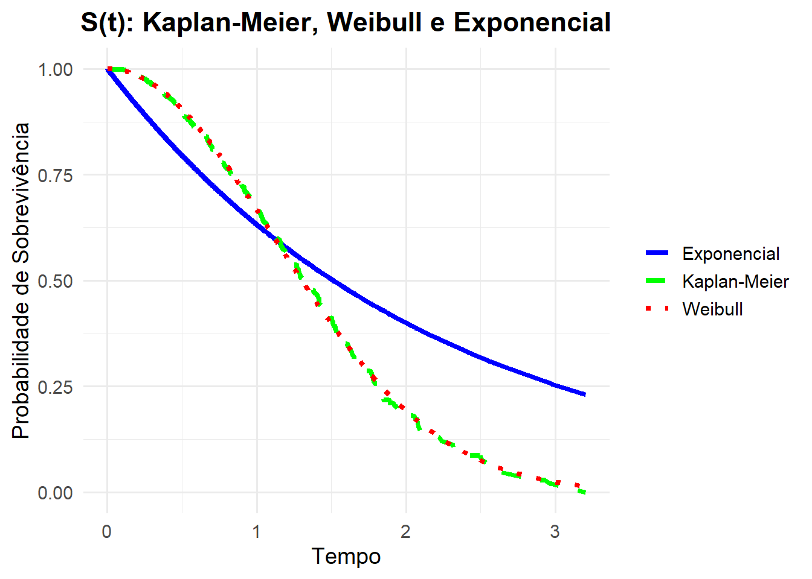

Código
library(ggplot2)
set.seed(123)
n <- 1000No Capítulo anteriror, foi vista uma abordagem não paramétrica, onde, a estimação é feita sem se referir a uma distribuição de probabilidade específica para o tempo de sobrevivência.
Obtendo os estimadores não paramétricos diretamente do conjunto de dados. Supondo que o mecanismo gerador dessas informações opere de forma distinta em diferentes momentos no tempo. Funcionando de forma quase que independente, desta forma, conclui-se que a estimação não paramétrica têm tantos parâmetros quanto intervalos no tempo. Ao incluir covariáveis, o modelo de Kaplan-Meier não permite estimar o “efeito” das cováriaveis, mas apenas comparar e testar a igualdade entre duas curvas de sobrevivência.
De acordo com a distribuição de probabilidade que acredita-se descrever a variável resposta \(Y\), e de acordo com a função escolhida para a relação de \(Y\) com as covariáveis \(x_{1}, x_{2}, \cdots, x_{p}\), identifica-se o modelo de regressão como: Linear, Poisson, Logísitico, entre outros. Aplica-se a ideia em análise de sobrevivência, de forma que o tempo de ocorrência até um evento de interesse é a variável resposta.
Nesse contexto, neste Capítulo é vista uma abordagem paramétrica para estimar as funções básicas de sobrevivência. Onde se assume como conhecida a distribuição de probabilidade do tempo de evento e, desta forma, os parâmetros seram estimados.
Seja \(T\) uma variável aleatória que representa “tempo de sobrevivênvia”, qual a distribuição de probabilidade poderia representa-lá?
Como uma característica da variável aleatória \(T\) é contínua e não negativa, pode-se a partir dessa caracater´sitica, remover algumas distribuições da lista de possíveis distribuições de probabilidades de \(T\). Desta forma, a distribuição normal já não se torna adequada, pois tal distribuição permite valores negativos. Além disso, o tempo de sobrevivência contém, frequentemente, uma forte assimetria à direita.
Entre os modelos paramétricos, utiliza-se muito a classe tempo de vida acelerado. Em tal classe, o tempo de sobrevivência \(T\), obdesce a seguinte relação:
\[ \ln(T) = \mu + \sigma W, \tag{3.1}\]
onde \(\mu\) é o parâmetro que representa a média de \(\ln(T)\) e \(\sigma\) sua dispersão, mas usualmente denominados, respectivamnete, parâmetros de locação e escala. \(W\) é uma variável aleatória que possa representar \(\ln(T)\) a partir de uma distribuição de probabilidade.
Se \(T \sim Exp(\alpha)\), a sua função densidade de probabilidade é expressa da seguinte forma:
\[ f(t) = \alpha e^{-\alpha t}, \ t \geq 0 \ \text{e} \ \alpha > 0. \tag{3.2}\]
Desta forma, para obtermos, por exemplo, a função de sobrevivência basta integrarmos a função densidade de probabilidade, veja:
\[\begin{align*} S(t) & = P(T \geq t) = \int_{t}^{\infty} \alpha e^{-\alpha t} \ dt \\ & = \alpha \int_{t}^{\infty} e^{-\alpha t} \ dt = \alpha \int_{t}^{\infty} e^{u} \ \frac{du}{- \alpha} \\ & = \frac{\alpha}{-\alpha} \int_{t}^{\infty} e^{u} \ du = - \left[ e^{u} \right]_{t}^{\infty} = - \left[ e^{- \alpha t} \right]_{t}^{\infty} \\ & = - [ e^{- \alpha \infty} - e^{- \alpha t}] = - [0 - e^{- \alpha t}] = e^{- \alpha t}. \end{align*}\]Assim, foramalmente, a função de sobrevivência é expressa por:
\[ S(t) = e^{- \alpha t}. \tag{3.3}\]
Note que o parâmetro \(\alpha\) é a velocidade de queda da função sobrevivência. Através das relações entre as funções em análise de sobrevivência, temos a função risco ou taxa de falha. Obtida pela razão entre a densidade de probabilidade e a função de sobrevivência:
\[ \lambda(t) = \dfrac{f(t)}{S(t)} = \dfrac{\alpha e^{-\alpha t}}{e^{-\alpha t}} = \alpha = \text{constante}. \tag{3.4}\]
Sendo a função risco constante para todo tempo observado \(t\), o risco acumulado é função linear no tempo com uma inclinação na reta dado por \(\alpha\):
\[ \Lambda = - \ln[S(t)] = - \ln[e^{-\alpha t}] = - (- \alpha t) = \alpha t \tag{3.5}\]
Afim de ilustrar para visualização e melhor aprendizado do autor e de quem for ler tal material foram simuladas as funções de sobrevivência, risco e risco acumulado variando o parâmetro \(\alpha\).
library(ggplot2)
set.seed(123)
n <- 1000# ---------------------------
# [1] DISTRIBUIÇÃO EXPONENCIAL
# ---------------------------
# -------------
# [1.1] FUNÇÕES
# -------------
# As funções de sobrevivência, risco e risco acumulado são simplificadas
Stexp <- function(t, alpha) exp(-alpha * t)
htexp <- function(alpha) rep(alpha, length(t))
Ltexp <- function(t, alpha) alpha * t
# ----------------------------------------
# [1.2] SIMULAÇÃO E VARIAÇÃO DE PARÂMETROS
# ----------------------------------------
tempo <- rexp(n, rate = 1) # Simulando dados de uma exponencial
alphas <- c(1, 1.5, 2) # Valores de alpha a serem avaliados
# Criando um Data Frame com valores das funções
dados <- do.call(rbind, lapply(alphas, function(alpha) {
data.frame(
tempo = tempo,
St = Stexp(tempo, alpha),
ht = htexp(alpha),
Lt = Ltexp(tempo, alpha),
alpha = factor(alpha)
)
}))
# -------------
# [1.3] GRÁFICOS
# -------------
# Criando uma função para gerar gráficos
plot_func <- function(data, y_var, y_label, color_values, y_expression) {
ggplot(data, aes(x = tempo, y = !!sym(y_var), color = alpha)) +
geom_line(stat = "summary", fun = mean, size = 1) +
labs(x = "Tempo", y = y_expression, color = expression(alpha)) +
scale_color_manual(values = color_values,
labels = lapply(alphas, function(a) bquote(alpha == .(a)))) +
theme_minimal()
}Veja a seguir a Figura 3.1. Tal Figura mostra as curvas de sobrevivência para diferentes valores do parâmetro \(\alpha\).
# Função de Sobrevivência
plot_func(dados, "St", "S(t)", c("red", "blue", "green"), expression(S(t)))Veja a seguir a Figura 3.2. Tal Figura mostra a função de risco para diferentes valores do parâmetro \(\alpha\).
# Função de Risco
plot_func(dados, "ht", expression(lambda(t)), c("red", "blue", "green"), expression(lambda(t)))Veja a seguir a Figura 3.3. Tal Figura mostra a função de risco acumulado para diferentes valores do parâmetro \(\alpha\).
# Função de Risco Acumulado
plot_func(dados, "Lt", expression(Lambda(t)), c("red", "blue", "green"), expression(Lambda(t)))Note que quanto maior o valor de \(\alpha\) (risco), mas abruptamente a função de sobrevivência \(S(t)\) decresce e maior é a inclinação que representa o risco acumulado.
Como a distribuição exponencial possui um único parâmetro se torna matematicamente simples além de possuir um formato assimétrico.
O seu uso em análise de sobrevivência tem certa analogia com a presuposição de normalidade em outras técnicas e áreas da estatísticas. Porém, seu presuposto de risco constante é uma afirmação muuito forte a se fazer a respeito do risco. Por exemplo, está sendo realizado um estudo sobre o cancêr, o tempo de evento de tal experimento é o tempo até que ocorra a morte ou cura do paciente. Para aplicar a distribuição exponecial para modelar esse problema seria necessário pensar que o tempo desde o diagnóstico da doênça não afeta o tempo de ocorrência do evento. O que é delicado de se aceitar, tendo em vista que o prórprio passar do tempo afeta a probabilidade de sobrevivência, o risco, risco acumulado, etc. Tendo em vista que, isso pode ser simplismente por causas naturais como aumento da idade ao passar do tempo (envelhecimento), por exemplo. Desta forma, está consequência da distribuição exponencial, isso é denominado de falta de memória da distribuição normal.
Quando \(\alpha = 1\), diz-se que a distribuição exponecial padrão. A média \(\left( E[t] \right)\) e variância \(\left( Var[T] \right)\) do tempo de sobrevivência, quando este seguir uma distribuição em Exponecial, são obtidas a partir da inversa do risco (\(\alpha\)). Quanto maior o risco, menor o tempo médio de sobrevivência e menor variabilidade deste em torno na média.
\[ E[T] = \dfrac{1}{\alpha} \]
\[ Var[T] = \dfrac{1}{\alpha^2} \]
Ao afirmar que o tempo de sobrevivência \(T\) segue uma distribuição de exponencial equivale a dizer que na Equação 3.1, \(W\) segue uma distribuição valor extremo padrão, \(\sigma = 1\). Assim para cada tempo \(t\), a Equação 3.1 é escrita da seguinte forma: \(\ln(T) = \mu + w\), como a \(E[T] = \frac{1}{\alpha}\) na distribuição exponencial, tem-se que: \[\mu = - \ln(\alpha).\]
Essa é uma forma de parametrização dos modelos parâmetricos utilizada no R, isto é, o parâmetro \(\alpha = e^{-\mu}\).
Como a distribuição de \(T\) é assimétrica, se torna mais usual utilizar o tempo mediano de sobrevivência ao invés de tempo médio. Pode-se obter o tempo mediano de sobrevivência a partir de um tempo \(t\), tal que, \(S(t) = 0,5\), logo
\[\begin{align*} S(t) & = 0,5 \Leftrightarrow e^{-\alpha t} = 0,5 \Leftrightarrow -\alpha t = \ln(1/2) \\ \alpha t & = - \ln(2^{-1}) \Leftrightarrow \alpha t = \ln((2^{-1})^{-1}) \\ \alpha t & = - \ln(2). \end{align*}\]Desta forma, o tempo mediano de sobrevivência é definido como:
\[ T_{mediano} = \dfrac{\ln(2)}{\alpha}. \]
Em suma, o modelo exponecial se torna adequado quando o período do experimento é curto para que a supocisão de risco constante possa ser antendida.
Na maioria do casos de análise de sobrevivência na área da saúde, se torna mais lógico supor que o risco não é constante ao longo do tempo.
Atualmente, a Distribuição Weibull é mais utilizada, pois permite a variação do risco ao longo do tempo. Será possível ver que a distribuição exponencial é um caso particular da distribuição weibull.
Se o tempo de sobrevivência \(T\) segue uma distribuição Weibull, isto é, \(T \sim Weibull(\alpha, \gamma)\), sua função densidade de probabilidade é expressa por:
\[ f(t) = \gamma \alpha^{\gamma} t^{\gamma - 1} \exp \left\{ -\left( \dfrac{t}{\alpha} \right)^{\gamma} \right\}. \tag{3.6}\]
A partir da Equação 3.6 é possível chegar a função de sobrevivência da distribuição Weibull sendo está função definida como:
\[ S (t) = \exp \left\{ -\left( \dfrac{t}{\alpha} \right)^{\gamma} \right\}, \tag{3.7}\]
onde \(t \geq 0\), \(\alpha\) o parâmetro taxa e \(\gamma\) parâmetro de forma. Ambos os parâmetros sempre positivos.
A função de risco, \(\lambda(t)\), depende do tempo de sobrevivência. Apresentando variação no tempo conforme a expressão:
\[ \lambda (t) = \gamma \alpha^{\gamma} t^{\gamma - 1} \tag{3.8}\]
e a função de risco acumulado da distribuição Weibull é dada por:
\[ \Lambda (t) = - \ln S (t) = -\left( \dfrac{t}{\alpha} \right)^{\gamma}. \tag{3.9}\]
Note que, o parâmetro \(\gamma\) determina a forma função de risco da seguinte maneira:
Afim de ilustrar para visualização e melhor aprendizado do autor e de quem for ler tal material foram simuladas as funções de sobrevivência, risco e risco acumulado variando o parâmetro \(\gamma\).
library(ggplot2)
set.seed(123)
n <- 1000# ------------------------
# [2] DISTRIBUIÇÃO WEIBULL
# ------------------------
# -------------
# [2.1] FUNÇÕES
# -------------
# Funções para Weibull
StWei <- function(t, alpha, gamma) exp(-(t/alpha)^gamma)
htWei <- function(t, alpha, gamma) gamma * (alpha^gamma) * t^(gamma - 1)
LtWei <- function(t, alpha, gamma) (t/alpha)^gamma
# ----------------------------------------
# [2.2] SIMULAÇÃO E VARIAÇÃO DE PARÂMETROS
# ----------------------------------------
# Simulando dados de uma Weibull
tempo <- rweibull(n, shape = 2, scale = 1)
alpha <- 1 # Fixo para simplificar
gammas <- c(0.5, 1.0, 1.5, 2.0, 2.5, 3.0) # Valores de gamma
# Criando um Data Frame com valores das funções
dados <- do.call(rbind, lapply(gammas, function(gamma) {
data.frame(
tempo = tempo,
St = StWei(tempo, alpha, gamma),
ht = htWei(tempo, alpha, gamma),
Lt = LtWei(tempo, alpha, gamma),
gamma = factor(gamma)
)
}))
# --------------
# [2.3] GRÁFICOS
# --------------
# Função genérica para gráficos
plot_func <- function(data, y_var, y_label, color_values, y_expression) {
ggplot(data, aes(x = tempo, y = !!sym(y_var), color = gamma)) +
geom_line(stat = "summary", fun = mean, size = 1) +
labs(x = "Tempo", y = y_expression, color = expression(gamma)) +
scale_color_manual(values = color_values,
labels = lapply(gammas, function(g) bquote(gamma == .(g)))) +
theme_minimal()
}
# Paleta de cores
color_values <- c("red", "blue", "green", "purple", "orange", "brown")Veja a seguir a Figura 3.4. Tal Figura mostra as curvas de sobrevivência para diferentes valores do parâmetro \(\gamma\).
# Função de Sobrevivência
plot_func(dados, "St", expression(S(t)), color_values, expression(S(t)))Veja a seguir a Figura 3.5. Tal Figura mostra a função de risco para diferentes valores do parâmetro \(\gamma\).
# Função de Risco
plot_func(dados, "ht", expression(lambda(t)), color_values, expression(lambda(t)))Veja a seguir a Figura 3.6. Tal Figura mostra a função de risco acumulado para diferentes valores do parâmetro \(\gamma\).
# Função de Risco Acumulado
plot_func(dados, "Lt", expression(Lambda(t)), color_values, expression(Lambda(t)))É incluso a função gama na média e variância da distribuição Weibull, assim,
\[ E[T] = \alpha \Gamma[1 + (1/\gamma)] \] \[ Var[T] = a^{2} \left[ \Gamma [1 + (2/\gamma)] - \Gamma [1 + (1/\gamma)]^{2} \right] \]
sendo a função gama \(\Gamma [k]\), expressa por \(\Gamma [k] = \int_{0}^{\infty} x^{k -1} e^{- x} dx\).
Afim de se obter o tempo mediano de sobrevivência, igualamos a probabilidade de sobrevivência a 0,5. Desta forma:
\[\begin{align*} S(t) & = 0,5 \Leftrightarrow e^{(-\alpha t)^{\gamma}} = 1/2 \\ - (\alpha t)^{\gamma} & = - \ln(2^{-1}) \Leftrightarrow \alpha t = \ln(2) \\ (\alpha t)^{\gamma} & = \ln(2). \end{align*}\]Logo,
\[ T_{mediano} = \dfrac{\ln(2)^{1/\gamma}}{\alpha}. \]
Um ponto que deve ser chamada atenção é a relação da distribuição Weibull com outra distribuição. Esta outra distribuição é chamada de distribuição do valor extremo ou de Gambel. Tal distribuição surge ao se tomar o logaritmo de uma variável \(T\) com distribuição de Weibull com \(f(t)\) dada por Equação 3.6, desta forma, \(Y = \ln(T)\) tem distribuição do valor extremo com densidade da forma:
Uma outra possibilidade para modelar o tempo de sobrevivência é a distribuição Log-normal. Dizer que \(T \sim Normal(\mu, \sigma^{2})\) implica em dizer que \(\ln(T) \sim log-Normal(\mu, \sigma^{2})\) em que \(\mu\) é a média do logaritmo do tempo de falha e \(\sigma^{2}\) sua variância. Pode-se fazer uso desta relação para modelar o tempo de sobrevivência conforme uma distribuição normal, desde que, se aplique o logaritmo aos dados observados. A função densidade para tal distribuição é dada por:
\[ f (t) = \dfrac{1}{t \sigma \sqrt{2 \pi}} \exp \left\{- \dfrac{1}{2} \left(\dfrac{\ln(t) - \mu}{\sigma}\right)^{2} \right\} \tag{3.10}\]
Assim, quando o tempo de sobrevivência segue uma distribuição log-normal, sua função de sobrevivência e as demais não tem uma forma análitica explícita, desde modo, deve-se fazer uso das relações entre as funções para se obter a função taxa de falha e taxa de falha acumulada. Desta forma, essas funções são expressas, respectivamente, por:
\[ S (t) = \Phi \left( \dfrac{- \ln(t) + \mu}{\sigma} \right) \tag{3.11}\]
\[ \lambda (t) = \dfrac{f (t)}{S (t)} \ \text{ e } \ \Lambda (t) = - \ln S(t) \]
em que \(\Phi (\cdot)\) é a função de distribuição acumulada da normal padrão.
Afim de ilustrar para visualização e melhor aprendizado do autor e de quem for ler tal material foram simuladas as funções de sobrevivência, risco e risco acumulado variando o parâmetro \(\mu\).
library(ggplot2)
library(dplyr)
set.seed(123)
n <- 1000# --------------------------
# [4] DISTRIBUIÇÃO LOG-NORMAL
# --------------------------
# -------------
# [4.1] FUNÇÕES
# -------------
# Função densidade (f)
ftLogNormal <- function(t, mu, sigma) {
(1 / (t * sigma * sqrt(2 * pi))) * exp(-0.5 * ((log(t) - mu) / sigma)^2)
}
# Função de Sobrevivência (S)
StLogNormal <- function(t, mu, sigma) {
pnorm(-(log(t) - mu) / sigma, lower.tail = TRUE)
}
# Função de Risco (h)
htLogNormal <- function(t, mu, sigma) {
ftLogNormal(t, mu, sigma) / StLogNormal(t, mu, sigma)
}
# Função de Risco Acumulado (Lambda)
LtLogNormal <- function(t, mu, sigma) {
-log(StLogNormal(t, mu, sigma))
}
# ----------------------------------------
# [4.2] SIMULAÇÃO E VARIAÇÃO DE PARÂMETROS
# ----------------------------------------
# Simulando dados da distribuição log-normal
tempo <- rlnorm(n, meanlog = 0, sdlog = 1)
mus <- c(0, 0.5, 1) # Valores de mu
sigma <- 1 # Valor fixo de sigma
# Criando um Data Frame com valores das funções
dados <- do.call(rbind, lapply(mus, function(mu) {
data.frame(
tempo = tempo,
ft = ftLogNormal(tempo, mu, sigma),
St = StLogNormal(tempo, mu, sigma),
ht = htLogNormal(tempo, mu, sigma),
Lt = LtLogNormal(tempo, mu, sigma),
mu = factor(mu)
)
}))
# -------------
# [4.3] GRÁFICOS
# -------------
# Função genérica para gráficos
plot_func <- function(data, y_var, y_label, color_values, y_expression) {
ggplot(data, aes(x = tempo, y = !!sym(y_var), color = mu)) +
geom_line(stat = "summary", fun = mean, size = 1) +
labs(x = "Tempo", y = y_expression, color = expression(mu)) +
scale_color_manual(values = color_values,
labels = lapply(mus, function(m) bquote(mu == .(m)))) +
theme_minimal()
}
# Paleta de cores
color_values <- c("red", "blue", "green")Veja a seguir a Figura 3.7. Tal Figura mostra as curvas de sobrevivência para diferentes valores do parâmetro \(\mu\).
# Função de Sobrevivência
plot_func(dados, "St", expression(S(t)), color_values, expression(S(t)))Veja a seguir a Figura 3.8. Tal Figura mostra a função de risco para diferentes valores do parâmetro \(\mu\).
# Função de Risco
plot_func(dados, "ht", expression(lambda(t)), color_values, expression(lambda(t)))Veja a seguir a Figura 3.9. Tal Figura mostra a função de risco acumulado para diferentes valores do parâmetro \(\mu\).
# Função de Risco Acumulado
plot_func(dados, "Lt", expression(Lambda(t)), color_values, expression(Lambda(t)))A média de \(T\) é dada por:
\[ E[T] = \exp \{ \mu + \frac{\sigma^2}{2} \}, \]
e a variância de \(T\) definida como:
\[ Var[T] = \exp \{ 2 \mu + \sigma^2 \} (\exp \{ \sigma^{2} \} - 1). \]
Foi mostrado alguns modelos probabilísticos. Porém, tais modelos apresentam quantidades desconhecidas denominadas de parâmetros ou parâmetro quando o modelo de probabilidade depende apenas de uma quantidade desconhecida, por exemplo, a distribuição exponencial.
O Método de Máxima Verossimilhança se baseia na ideia de que, a partir de uma amostra aleatória, a estimativa para o parâmetro de interesse maximiza a probabilidade de tal amostra aleatória ser obtida.
Em termos simples, o método de máxima verossimilhança condensa toda informação contida, através da função de verossimilhança, na amostra. Afim de encontrar o(s) parâmetro(s) da distribuição que melhor expliquem essa amostra é realizado o produtório da densidade (\(f (t)\)) para cada observação amostral \(t_{i}\), \(i = 1, 2, \cdots, n\). Em livros de estatística básica, a seguinte definição da função verossimilhança é adotada, para um parâmetro (ou conjunto de parâmetros) \(\theta\) qualquer:
\[ L (\theta) = \prod_{i = 1}^{n} f (t_{i}, \theta). \]
Perceba que \(L\) é função de \(\theta\), sendo este um único parâmetro ou um conjunto de parâmetros, como na distribuição log-normal, onde \(\theta = (\mu, \sigma^{2})\). Entretanto, nota-se que para qualquer observação não censurada, sua contribuição para \(L (\theta)\) é a sua densidade, o que na análise de sobrevivência não é o suficiente, já que os dados apresentam censura, implicando no tempo de falha ser na verdade superior ao tempo de censura observado.
Desta forma, faz-se uso da variável indicadora \(\delta_{i}\), apresentada na Seção 1.5, que nos diz se o \(i\)-ésimo tempo é tempo de falha ou de censura. Logo, são feitos alguns ajustes na função de verossimilhança. Tais ajustes fazem com que para \(\delta_{i} = 1\), o \(i\)-ésimo tempo é tempo de falha e a contribução para \(L\) é a própria função densidade de probabilidade, em contraste a isso, se \(\delta_{i} = 0\), o \(i\)-ésimo tempo é tempo de censura e a contribuição dessa observação é a função de sobrevivência. Assim, a função de verossimilhança para um parâmetro ou um conjunto de parâmetros \(\theta\) pode ser escrita como:
\[ L (\theta) = \prod_{i = 1}^{n} \ [f (t_{i}, \theta)]^{\delta_{i}} \ [S(t_{i})]^{1 - \delta_{i}} \tag{3.12}\]
A partir da deriva do log da verossimilhança igualada a zero, \[\dfrac{\partial \ln L (\theta)}{\partial \theta} = 0,\] é possível encontrar um valor para \(\theta\) que maximize \(\ln L (\theta)\), portanto, maximize \(L (\theta)\).
Será mostrado nessa seção como encontrar o estimador ou estimadores de máxima verossimilhança para os parâmetros das disitribuições citadas.
Para uma distribuição exponencial conforme descrita na Seção 3.2.1. O Estimador de Máxima Verossimilhança do parâmetro \(\alpha\) pode ser obtido de acordo com os seguintes passos:
Ao igualar a derivada a zero e isolando \(\alpha\) em um dos lados da igualdade e assuminado que a forma análitica de \(\alpha\) obtida é um estimador de máxima verossimilhança temos:
\[\begin{align*} \dfrac{\partial \ln L (\theta)}{\partial \theta} & = 0 \\ \dfrac{1}{\hat{\alpha}} \sum_{i = 1}^{n} \delta_{i} - \sum_{i = 1}^{n} t_{i} & = 0 \\ \hat{\alpha} & = \dfrac{\sum_{i = 1}^{n} \delta_{i}}{\sum_{i = 1}^{n} t_{i}} \end{align*}\]Note que, para o caso em que não se tem censura o numerador, \(\sum_{i = 1}^{n} \delta_{i}\), equivale ao tamanho da amostra \(n\).
A seguir, temos um exemplo computacional. Simulou-se uma amostra proveniente de uma distribuição exponecial e a partir de tal amostra se obteve a estimativa de máxima verossimilhança do parâmetro \(\alpha\) de tal amostra.
set.seed(123)
n <- 1000
# -------------
# [2.1] FUNÇÕES
# -------------
# Função de Sobrevivência
Stexp <- function(t, alpha) exp(-alpha * t)
# ----------------------------------------
# [2.2] SIMULAÇÃO E VARIAÇÃO DE PARÂMETROS
# ----------------------------------------
alpha <- 1.5 # Parâmetro de taxa (escala) populacional
tempo <- rexp(n, rate = alpha) # Simulando dados de uma exponencial
emvExp <- n / sum(tempo) # EMV
# Criando um Data Frame com valores das funções
dados <- data.frame(
Tempo = tempo,
St = Stexp(tempo, alpha),
emvSt = Stexp(tempo, emvExp)
)O valor de verdadeiro do parâmetro \(\alpha =\) 1.5. A estimativa de máxima verossimilhança obtida foi \(\hat{\alpha} =\) 1.46.
Veja a Tabela 3.1 que mostra as dez primeiras observações e suas respectivas funções de sobrevivência, sobrevivência real e sobrevivência estimada.
library(knitr)
knitr::kable(head(dados),
col.names = c("Tempo", "S(t)", "S(t) EMV"),
escape = FALSE,
align = 'c',
booktabs = TRUE)| Tempo | S(t) | S(t) EMV |
|---|---|---|
| 0.5623048 | 0.4302206 | 0.4409133 |
| 0.3844068 | 0.5617995 | 0.5713079 |
| 0.8860366 | 0.2647273 | 0.2751688 |
| 0.0210516 | 0.9689160 | 0.9698070 |
| 0.0374740 | 0.9453397 | 0.9468876 |
| 0.2110008 | 0.7286941 | 0.7354381 |
Temos também a comparação dessas duas curvas de sobrevivência, ilustradas na Figura 3.10.
ggplot(dados, aes(x = Tempo)) +
geom_line(aes(y = St, color = "alpha"), lwd = 1.5) +
geom_line(aes(y = emvSt, color = "emvAlpha"), lwd = 1, lty = 4) +
scale_color_manual(
values = c("alpha" = "black", "emvAlpha" = "red"),
labels = c(expression(alpha), expression(hat(alpha)))) +
labs(
x = "Tempo",
y = expression(S(t)),
color = "Parâmetro") +
theme_minimal()Para uma distribuição Weibull, descrita na Seção 3.2.2 não há uma forma análitica para \(\gamma\) e \(\alpha\). Logo, para obter a sua estimativa de máxima verossimilhança se usa um método de aproximação numérica, será introduzido aqui o Método Iterativo de Newton-Raphson.
O Método de Newton-Raphson é uma abordagem iterativa eficiente para resolver equações não lineares, sendo amplamente utilizado na estimação de parâmetros de distribuições estatísticas. Quando aplicado ao ajuste de distribuições, como a Weibull no contexto de análise de sobrevivência, o método busca maximizar a função de verossimilhança, resolvendo o sistema de equações derivado das condições de otimalidade (gradiente nulo).
A fórmula iterativa é:
\[ \theta_{n+1} = \theta_n - \mathbf{H}^{-1}(\theta_n) \nabla L(\theta_n), \]
onde:
Vantagens no ajuste de distribuições:
Cuidados na aplicação:
No caso da distribuição Weibull, a aplicação do método Newton-Raphson envolve derivadas em relação aos parâmetros de forma (\(\gamma\)) e escala (\(\alpha\)), permitindo ajustar o modelo aos dados observados de tempos de sobrevivência de forma precisa e eficiente.
Para utilizar o Método Iterativo de Newton-Raphson, pode-se escrever o algoritmo passo a passo. Outra forma, é usar a função do R optim. Será aprensatado as duas formas e seus detalhes serão comentados.
Começando pela construção do algoritmo passo a passo, precisamos definir algumas funções. A primeira é a função de verossimilhança da distribuição Weibull, que pode ser obtida a partir da Equação 3.12 ao substituir respectivamente a função densidade e sobrevivência da distribuição Weibull respectivamente. Assim:
\[\begin{align*} L (\gamma, \alpha) & = \prod_{i = 1}^{n} \left[ \gamma \alpha^{\gamma} t_{i}^{\gamma - 1} \exp \left\{ - \left(\dfrac{t_{i}}{\alpha}\right)^{\gamma} \right\} \right]^{\delta_{i}} \left[ \exp \left\{ - \left(\dfrac{t_{i}}{\alpha}\right)^{\gamma} \right\} \right]^{1 - \delta_{i}} \\ & = \prod_{i = 1}^{n} \left[ \dfrac{\gamma}{\alpha^{\gamma}} t^{\gamma - 1} \right]^{\delta_{i}} \exp \left\{ - \left(\dfrac{t_{i}}{\alpha}\right)^{\gamma} \right\} \end{align*}\]Toma-se o logaritmo de \(L (\gamma, \alpha)\), logo:
\[\begin{align*} \ln L (\gamma, \alpha) & = \sum_{i = 1}^{n} \delta_{i} \ln\{ \gamma \} - \sum_{i = 1}^{n} \delta_{i} \gamma \ln\{ \alpha \} + \sum_{i = 1}^{n} \delta_{i} (\gamma - 1) \ln \{ t_{i} \} + \sum_{i = 1}^{n} - (\alpha^{-1} t_{i})^{\gamma} \\ & = \ln\{ \gamma \} \sum_{i = 1}^{n} \delta_{i} - \gamma \ln\{ \alpha \} \sum_{i = 1}^{n} \delta_{i} + (\gamma - 1) \sum_{i = 1}^{n} \delta_{i} \ln \{ t_{i} \} + \sum_{i = 1}^{n} - (\alpha^{-1} t_{i})^{\gamma} \end{align*}\]Agora, aplica-se as derivadas de primeira ordem em relação a \(\gamma\) e \(\alpha\).
\[ \dfrac{\partial \ln L (\gamma, \alpha)}{\partial \gamma} = \dfrac{\sum_{i = 1}^{n} \delta_{i}}{\gamma} - \ln\{\alpha\} \sum_{i = 1}^{n} \delta_{i} + \sum_{i = 1}^{n} \delta_{i} \ln\{t_{i}\} - \sum_{i = 1}^{n} (\alpha^{-1} t_{i})^{\gamma} \ln\{ (\alpha^{-1} t_{i})^{\gamma} \} \]
\[ \dfrac{\partial \ln L (\gamma, \alpha)}{\partial \alpha} = - \dfrac{\gamma \sum_{i = 1}^{n} \delta_{i}}{\alpha} + \gamma \alpha^{- \gamma - 1}\sum_{i = 1}^{n} t_{i}^{\gamma} \]
Toma-se agora as derivadas de segunda ordem.
\[ \dfrac{\partial^{2} \ln L (\gamma, \alpha)}{\partial \gamma^{2}} = \dfrac{\sum_{i = 1}^{n} \delta_{i}}{\gamma^{2}} - \sum_{i = 1}^{n} (\alpha^{-1} t_{i})^{\gamma} [ \ln\{ (\alpha^{-1} t_{i})^{\gamma} \} ]^2 \]
\[ \dfrac{\partial^{2} \ln L (\gamma, \alpha)}{\partial \alpha^{2}} = \dfrac{\gamma \sum_{i = 1}^{n} \delta_{i}}{\alpha^{2}} - \gamma (\gamma + 1) \alpha^{- \gamma - 2} \sum_{i = 1}^{n} t_{i}^{\gamma} \]
\[ \dfrac{\partial^{2} \ln L (\gamma, \alpha)}{\partial \gamma \partial \alpha} = - \dfrac{\sum_{i = 1}^{n} \delta_{i}}{\alpha} + \sum_{i = 1}^{n} \dfrac{t_{i}^{\gamma}}{\alpha^{\gamma + 1}} \left( \gamma \ln \left\{ \dfrac{t_{i}}{\alpha} \right\} + 1 \right) \]
Com todas as derivadas definidas, é possível definirmos algumas funções e variáveis que iremos precisar para utilizar o algoritmo de Newton-Raphson.
cat("Era para ser um bloco de código. Porém, tal código está em manutenção")Era para ser um bloco de código. Porém, tal código está em manutençãoO bloco de código abaixo contém o algoritmo de Newton-Raphson.
cat("Era para ser um bloco de código. Porém, tal código está em manutenção")Era para ser um bloco de código. Porém, tal código está em manutençãoO bloco abaixo mostra o uso da função optim para otimização.
# ----------
# Otimização
# ----------
# Semente
set.seed(123)
# ---------------------------------
# Simulação e Visualização do Dados
# ---------------------------------
# Tamanho da amostra
n <- 1000
# Parâmetros da distribuição
wShape <- 2
wScale <- 1.5
# Simulação
dadosWeibull <- rweibull(n, shape = wShape, scale = wScale)
# --------------------------
# Função Log-verossimilhança
# --------------------------
logWeibull <- function(theta, dados){
gamma <- theta[1] # Parâmetro de forma
alpha <- theta[2] # Parâmetro de escala
n <- length(dados)
t <- dados
logverossimil <- (n * log(gamma)) - (gamma * log(alpha) * n) + (gamma - 1) * sum(log(t)) - sum((t/alpha)^gamma)
return(-logverossimil)
}
# ------------------------
# Aplicando a função optim
# ------------------------
theta0 <- c(1.5, 1) # Chute inicial
estimate <- optim(par = theta0, fn = logWeibull, gr = NULL , method = "BFGS" ,
hessian = TRUE, dados=dadosWeibull)
estimate$par
[1] 2.015515 1.507207
$value
[1] 999.1172
$counts
function gradient
52 9
$convergence
[1] 0
$message
NULL
$hessian
[,1] [,2]
[1,] 451.7492 -281.952
[2,] -281.9520 1788.248Assim como na distribuição exponencial, será feita uma comparação entre o real e estimado.
# ---------------------
# AJUSTES DE FORMATAÇÃO
# ---------------------
# Função de Sobrevivência
StWeibull <- function(t, gamma, alpha) exp(-(t/alpha)^gamma)
# Data Frame
dfWeibull <- data.frame(
Tempo = dadosWeibull,
St = StWeibull(dadosWeibull, wShape, wScale),
EMVSt = StWeibull(dadosWeibull, estimate$par[1], estimate$par[2])
)Veja a Tabela 3.2 que mostra as dez primeiras observações e suas respectivas funções de sobrevivência, sobrevivência real e sobrevivência estimada.
library(knitr)
knitr::kable(head(dfWeibull),
col.names = c("Tempo", "S(t)", "S(t) EMV"),
escape = FALSE,
align = 'c',
booktabs = TRUE)| Tempo | S(t) | S(t) EMV |
|---|---|---|
| 1.6745421 | 0.2875775 | 0.2904304 |
| 0.7315788 | 0.7883051 | 0.7921747 |
| 1.4183502 | 0.4089769 | 0.4128247 |
| 0.5290778 | 0.8830174 | 0.8858229 |
| 0.3716200 | 0.9404673 | 0.9422483 |
| 2.6362482 | 0.0455565 | 0.0456849 |
Temos também a comparação dessas duas curvas de sobrevivência, ilustradas na Figura 3.11.
library(ggplot2)
ggplot(dfWeibull, aes(x = Tempo)) +
geom_line(aes(y = St, color = "Verdadeiro"), lwd = 2) +
geom_line(aes(y = EMVSt, color = "EMV"), lwd = 1, lty = 4) +
scale_color_manual(
values = c("Verdadeiro" = "black", "EMV" = "red"),
labels = c(
"Verdadeiro" = expression(paste("Verdadeiro: ", gamma, ", ", alpha)),
"EMV" = expression(paste("EMV: ", hat(gamma), ", ", hat(alpha)))
)) +
labs(
x = "Tempo",
y = expression(S(t)),
color = "Parâmetros") +
theme_minimal()Podemos utilizar os conhecimentos até aqui obtidos para modelar e estimar parâmetros, e consequentemente, curvas de sobrevivência onde exista censura. Vejamos os blocos de códigos a seguir.
# -----------------------
# [1] Ativação de Pacotes
# -----------------------
library(survival)
library(ggplot2)# -----------------------
# [2] Simulação dos Dados
# -----------------------
# Definindo Semente
set.seed(123)
# Parâmetros
n <- 1000 # Número total de observações
gamma <- 2 # Parâmetro shape da Weibull
alpha <- 1.5 # Parâmetro scale da Weibull
TaxaExp <- 1 # Taxa da distribuição exponencial
propCens <- 1/3 # Proporção desejada de censuras
# Vetores para armazenar os resultados
Tobservado <- numeric(n)
indCensura <- numeric(n)
# Contadores
nFalhas <- 0
nCensuras <- 0
# Loop para gerar os tempos
for (i in 1:n) {
# Gerar um tempo de falha e um tempo de censura
Tfalha <- rweibull(1, shape = gamma, scale = alpha)
Tcensu <- rexp(1, rate = TaxaExp)
# Verificar qual é o menor tempo
if (Tfalha <= Tcensu) {
Tobservado[i] <- Tfalha
indCensura[i] <- 1 # Falha
nFalhas <- nFalhas + 1
} else {
if (nCensuras < propCens * n) {
Tobservado[i] <- Tcensu
indCensura[i] <- 0 # Censura
nCensuras <- nCensuras + 1
} else {
Tobservado[i] <- Tfalha
indCensura[i] <- 1 # Falha
nFalhas <- nFalhas + 1
}
}
}
# Verificar as proporções
cat("Proporção de falhas:", nFalhas / n, "\n")Proporção de falhas: 0.666 cat("Proporção de censuras:", nCensuras / n, "\n")Proporção de censuras: 0.334 # Dados simulados
dados <- data.frame(Tempo = Tobservado, Censura = indCensura)
# Histograma
ggplot(data = dados, aes(x = Tempo)) +
geom_histogram(bins = 15, fill = "blue") +
labs(title = "Histograma do Tempo de Sobrevivência - Simulação",
x = "Tempo", y = "Frequência") +
theme_minimal(base_size = 14) +
theme(plot.title = element_text(hjust = 0.5, face = "bold"))
# -------------
# [3] Estimação
# -------------
# -------------------------------
# [3.1] Estimação Não Paramátrica
# -------------------------------
# ---------------------------------
# [3.1.1] Estimador de Kaplan-Meier
# ---------------------------------
# Modelo de Kaplan-Meier
ekm <- survfit(Surv(Tempo, Censura) ~ 1, data = dados)
# Formatando como DataFrame
DataEKM <- data.frame(Time = ekm$time, Survival = ekm$surv, Type = "Kaplan-Meier")
# Visualização da curva
ggplot(data = DataEKM, aes(x = Time, y = Survival)) +
geom_line(color = "blue", lwd = 1.5) +
labs(title = "S(t) - Kaplan-Meier",
x = "Tempo", y = "Probabilidade de Sobrevivência") +
theme_minimal(base_size = 14) +
theme(plot.title = element_text(hjust = 0.5, face = "bold"))
# ---------------------------
# [3.2] Estimação Paramátrica
# ---------------------------
# --------------------------------
# [3.2.1] Distribuição Exponencial
# --------------------------------
# Função de Sobrevivência
Stexp <- function(t, alpha) exp(-alpha * t)
# EMV de α
emvExp <- sum(dados$Censura) / sum(dados$Tempo)
# EMV da Sobrevivência
EMVSurvExp <- Stexp(dados$Tempo, emvExp)
# Formatando como DataFrame
DataExp <- data.frame(Time = dados$Tempo, Survival = EMVSurvExp, Type = "Exponencial")
# Visualização da curva
ggplot(data = DataExp, aes(x = Time, y = Survival)) +
geom_line(color = "red", lwd = 1.5) +
labs(title = "S(t) - Exponencial",
x = "Tempo", y = "Probabilidade de Sobrevivência") +
theme_minimal(base_size = 14) +
theme(plot.title = element_text(hjust = 0.5, face = "bold"))
::: {.cell}
# ----------------------------
# [3.2.1] Distribuição Weibull
# ----------------------------
# Função de Sobrevivência
StWeibull <- function(t, gamma, alpha) exp(-(t / alpha)^gamma)
# EMV de γ e α
# 1. Função Log-verossimilhança
logWeibull <- function(theta, dados){
gamma <- theta[1] # Parâmetro de forma
alpha <- theta[2] # Parâmetro de escala
t <- dados$Tempo # Tempo de falha
c <- dados$Censura # Variável indicadora
logv <- (sum(c) * log(gamma)) - (gamma * log(alpha) * sum(c)) +
(gamma - 1) * sum(c * log(t)) - sum((t / alpha)^gamma)
return(-logv)
}
# 2. Otimizando
Theta0 <- c(1.5, 1)
estimate <- optim(par = Theta0, fn = logWeibull,
gr = NULL, method = "BFGS", hessian = TRUE, dados = dados)::: {.cell-output .cell-output-stderr}
Warning in log(gamma): NaNs produzidos
Warning in log(gamma): NaNs produzidos
Warning in log(gamma): NaNs produzidos:::
::: {.cell-output .cell-output-stderr}
Warning in log(alpha): NaNs produzidos
Warning in log(alpha): NaNs produzidos
Warning in log(alpha): NaNs produzidos
Warning in log(alpha): NaNs produzidos
Warning in log(alpha): NaNs produzidos
Warning in log(alpha): NaNs produzidos:::
estimate::: {.cell-output .cell-output-stdout}
$par
[1] 2.013314 1.535915
$value
[1] 745.9756
$counts
function gradient
31 9
$convergence
[1] 0
$message
NULL
$hessian
[,1] [,2]
[1,] 304.76432 -96.91392
[2,] -96.91392 1144.24624:::
# EMV da Sobrevivência
EMVSurvWeib <- StWeibull(dados$Tempo, estimate$par[1], estimate$par[2])
# Formatando como DataFrame
DataWeib <- data.frame(Time = dados$Tempo, Survival = EMVSurvWeib, Type = "Weibull")
# Visualização da curva
ggplot(data = DataWeib, aes(x = Time, y = Survival)) +
geom_line(color = "green", lwd = 1.5) +
labs(title = "S(t) - Weibull",
x = "Tempo", y = "Probabilidade de Sobrevivência") +
theme_minimal(base_size = 14) +
theme(plot.title = element_text(hjust = 0.5, face = "bold"))::: {.cell-output-display} ::: :::
Por fim, com o objetivo de fazer uma comparação, visual, temos a Figura abaixo.
# --------------------
# [4] Análise Conjunta
# --------------------
# Unindo os dados para visualização
AllData <- rbind(DataEKM, DataExp, DataWeib)
# Gráfico com ggplot2
ggplot(AllData, aes(x = Time, y = Survival)) +
geom_line(aes(color = Type, linetype = Type), lwd = 1.5) +
labs(title = "S(t): Kaplan-Meier, Weibull e Exponencial",
x = "Tempo", y = "Probabilidade de Sobrevivência") +
theme_minimal(base_size = 14) +
theme(plot.title = element_text(hjust = 0.5, face = "bold"),
legend.title = element_blank()) +
scale_color_manual(values = c("blue", "green", "red")) +
scale_linetype_manual(values = c(1, 2, 3)) # c("solid", "dashed", "dotted")